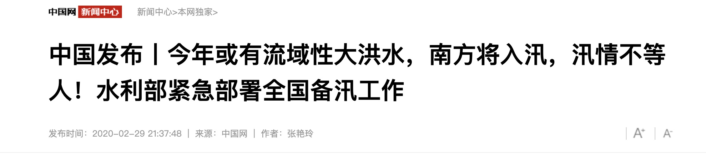
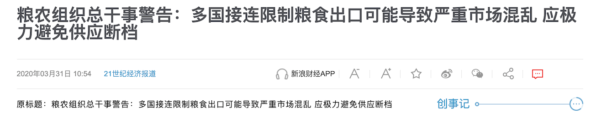
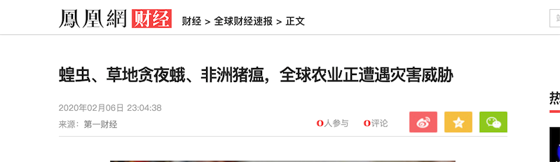
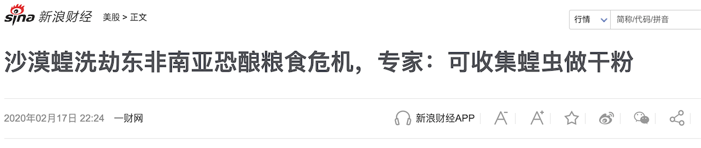

是否需要囤点粮食?
先看一下近期水利部门的讯息：
今年或有流域性大洪水，南方将入汛，汛情不等人！水利部紧急部署全国备汛工作
水利部水文水资源监测预报中心副主任 刘志雨：预测今年汛期，长江中下游、珠江流域的西江、海河部分水系、松花江、浙闽地区可能发生较大洪水。
这里是最近各国限制粮食出口的消息：
https://tech.sina.com.cn/roll/2020-03-31/doc-iimxxsth2796973.shtml越南海关宣布，从3月24日零点开始，各种大米产品都被禁止以任何形式出口。
3月26日，泰国宣布，禁止鸡蛋出口7天。
3月28日，埃及贸易和工业部部长内文·贾梅表示，未来3个月里，停止各种豆类产品的出口。
柬埔寨从4月5日起，除了香米，将禁止白米和稻米出口。
俄罗斯 从4月1日到6月30日，小麦、黑麦、大麦和玉米等出口量不得超过700吨。
哈萨克斯坦决定，对11种农产品实行限制出口，其中，就包括小麦。
塞尔维亚宣布，暂停出口葵花籽油等农产品。
除了限制出口，还有粮荒及增加进口的消息：
伊拉克表示，在未来几周，需要进口25万吨大米、100万吨小麦，来保证国家粮食储备，向国民提供食物。
印尼、菲律宾已经面临粮荒，储存的粮食最多只能维持3个月。
还有很多国家已经开始抢购，阿尔及利亚、土耳其等主要小麦进口国已经发了采购标书，摩洛哥也暂停小麦进口关税。
而美国的小麦期货在半个月里，涨幅已经高达15％。
联合国粮农组织发出警告，因为新型肺炎疫情，全球粮食供应链也许会在4—5月中断。
再来看下病虫害：
根据全国农业技术推广服务中心3月6日发布的病虫情报，初步统计在7省（区）176个县（市、区）查见草地贪夜蛾幼虫，累计发生面积76万亩，目前发生面积近55万亩。云南、海南、广东等省发生普遍，部分地区虫量较高。受访专家一致认为，2020年草地贪夜蛾北迁时间更早、发生区域更广、危害程度更重，防控任务更艰巨。

蝗虫、草地贪夜蛾、非洲猪瘟，全球农业正遭遇灾害威胁
沙漠蝗洗劫东非南亚恐酿粮食危机
最后国家粮食和物资储备局说中国粮食储备够一年：
看望上面的视频是放心了，还是继续担心着呢？首先，粮储局没有说今年不会发生粮食短缺现象，只说储备够一年（这里就大家去想象吧）。在附上一篇18年吉林粮仓着火的链接（18年有多起粮仓着火的新闻）供大家思考。
另外再说一下，农产品因疫情错过的播种、农作时机是补不回来的。囤粮和囤盐什么的不同，因为盐什么时候都能生产，粮食是有不可变的生产周期的。
现在，囤不囤粮，大家应该有自己的想法了。